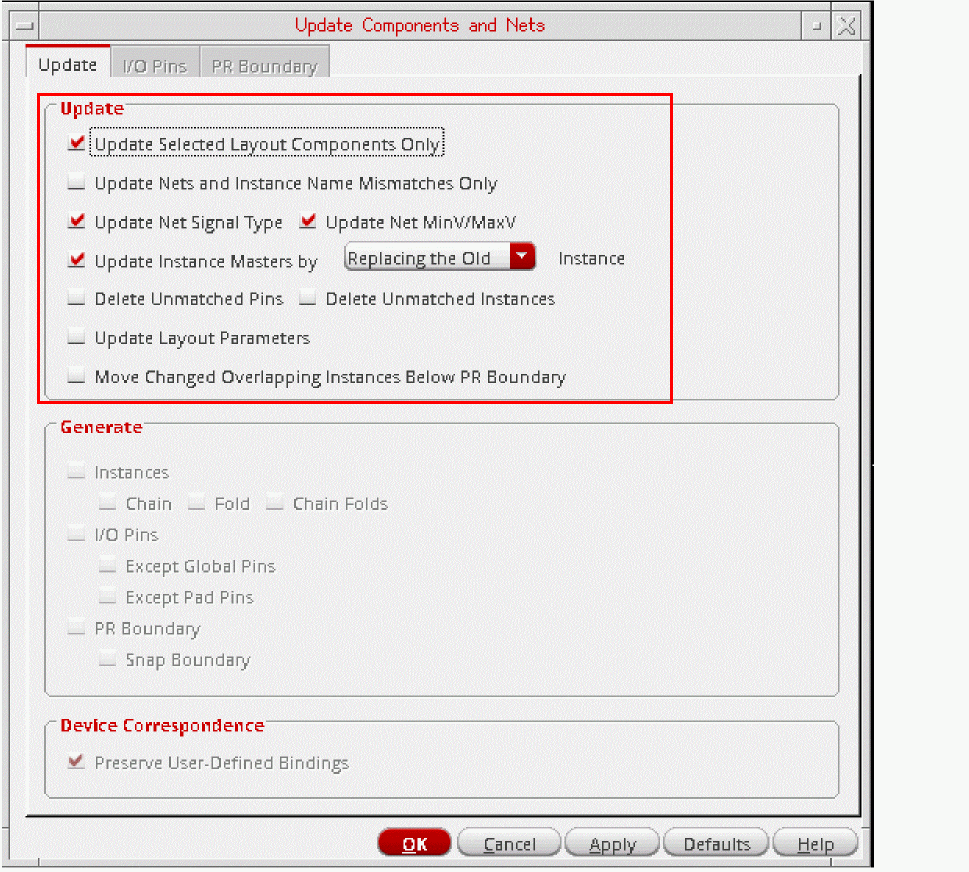
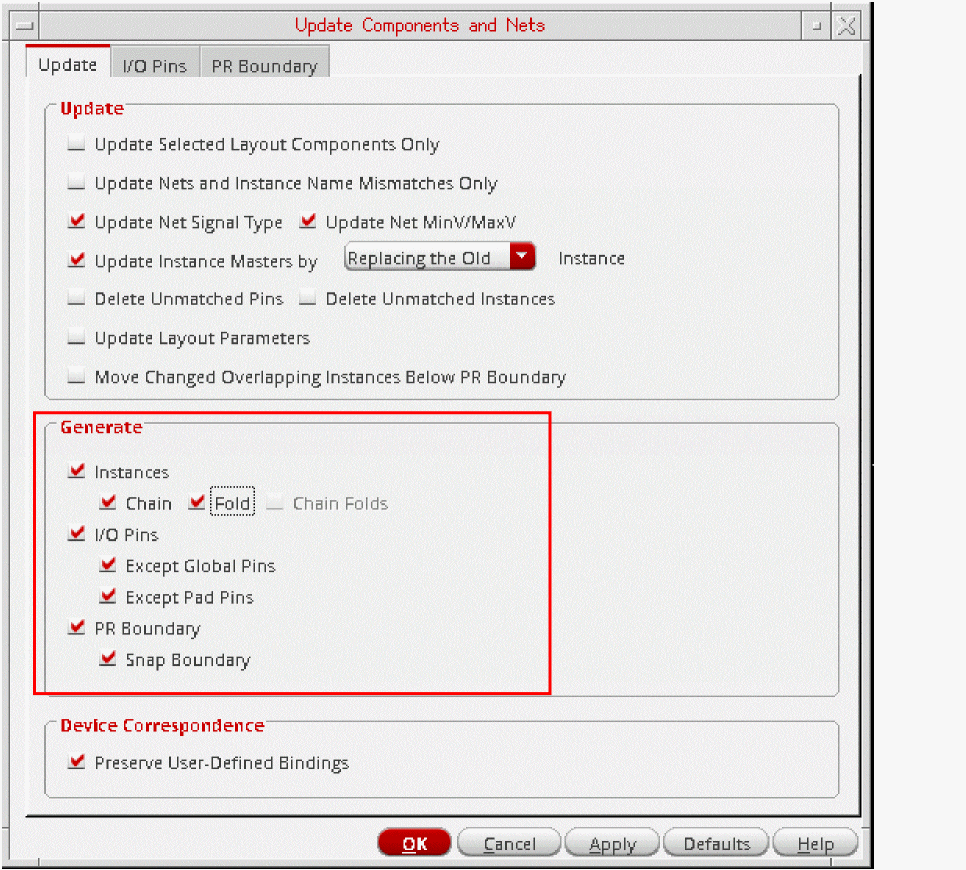

Specifying the Components to be Updated
When updating the whole design, you can specify that missing components are generated and existing components are regenerated. To do this:
- Select the Update of the Update Components and Nets form.
-
Select the appropriate options in the Update group box to specify how the layout components that need to be changed or removed should be handled.
- To update only selected instances and pins, see Updating Selected Layout Components.
- To update only the connectivity information for the selected instances and pins, see Updating Nets and Instance Name Mismatches Only.
- To update the signal types assigned to nets from the schematic view, select the Update Net Signal Type option.
-
To update instances with incorrect masters, select Update Instance Masters and specify how the incorrect instance should be handled.
- By default, it is removed and replaced by an instance of the correct master in the same location.
-
When set to Creating a New, the command puts a marker on the instance with the incorrect master and renames it name
_old. It then creates a new instance with the correct master and places it below the PR boundary.
Because you are creating a new instance, you can optionally enable Chain, Fold, and Chain Folds in this mode. If thedisableFoldingenvironment variable is set and the folding threshold for the component type is set to0, folding is disabled. - To delete layout pins and instances that are not present in the schematic, select the Delete Unmatched Pins and Delete Unmatched Instances options. When you delete unmatched pins, redundant nets and terminals are deleted at the same time.
- To update parameters and parameter values in the layout instances to match those on their schematic counterparts, select the Update Layout Parameters option.
- To automatically place instances below the PR boundary if they overlap other instances during the update, select the Move Changed Overlapping Instances Below PR Boundary option. The overlapping instances are the ones that have changed in size, and if placed at their original location, may overlap other unchanged instances.
- To delete layout pins and instances that are not present in the schematic, select the Delete Unmatched Pins and Delete Unmatched Instances options. When you delete unmatched pins, redundant nets and terminals are deleted at the same time.
- To update parameters and parameter values in the layout instances to match those on their schematic counterparts, select the Update Layout Parameters option.
- To automatically place instances below the PR boundary if they overlap other instances during the update, select the Move Changed Overlapping Instances Below PR Boundary option. The overlapping instances are the ones that have changed in size, and if placed at their original location, may overlap other unchanged instances.
-
Use the options in the Generate group box to regenerate instances, pins, and PR and snap boundaries.
-
Select the Instances, I/O Pins, and PR Boundary options as required.
Layout XL puts any missing instances and pins below the design boundary and updates their connectivity. Pins are automatically snapped to the placement grid. -
To chain any new transistors, select the Chain check box.
New chains are not attached to existing chains. Devices that were chained prior to running the command are not moved from their existing positions; missing devices are added in the correct position in the chain and not under the place and route boundary. -
To divide new transistors in the design into two or more folds, select the Fold check box.
If thedisableFoldingenvironment variable is set and the folding threshold for the component type is set to0, folding is disabled. -
To chain the individual folds of a transistor, select the Chain Folds check box.
The Chain Folds check box is active only when the Chain check box is deselected and the Fold check box is selected. If thedisableFoldingenvironment variable is set and the folding threshold for the component type is set to0, folding is disabled.
If the Chain and Fold check boxes are deselected, and you have deleted all the folds of a folded transistor, Update Components And Nets generates a single device for that transistor. If you have deleted only some folds of a folded device, Layout XL creates markers only if the folds in a numbered sequence are missing. Otherwise, Layout XL does nothing about the missing folds of folded transistors.
All devices to be chained or folded must belong to a component type which has Component class set to PMOS or NMOS and values set for the Active layer, Width parameter, and Folding threshold parameters.
See Component Types Mode in CPH. -
Select the Instances, I/O Pins, and PR Boundary options as required.
-
To preserve any user-defined binding of devices between the schematic and the layout, select the Preserve User-Defined Bindings.
This option preserves user-defined one-to-one, many-to-many, many-to-one, and one-to-many device correspondence defined in the Define Device Correspondence form. It does not report missing devices or shapes within a bound group.
See Device Correspondence Updates.
Related Topics
Update Components and Nets Form
Define Device Correspondence Form
Return to top